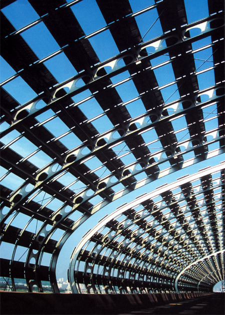
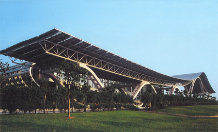

|
  |
| ■建設概要 | |
| 所在地／ | 中華人民共和国広州市 |
| 主用途／ | 産業展示施設 |
| 建築主／ | 中国広州市計画委員会 |
| 設計担当／ | 総括：大野 勝 建築：関野宏行、進藤憲治、謝 少明、三好 理、山口直子、有島暁子＋華南理工大学建築設計院（実施設計） 構造：桑原賢司、渡邊朋宏 電気：本間秀明、丑屋潤輔 空調・衛生：森 正夫、山本総一郎 |
| 監理／ | 進藤憲治、謝 少明、三好 理 |
| 構造／ | SRC、RC、S造 |
| 階数／ | 地上5階 地下1階 |
| 面積／ |
敷地：439,004m2 建築：128,656m2 延床：367,769m2 |
| 竣工／ | 2003.4 |
| ■ CLOSED |